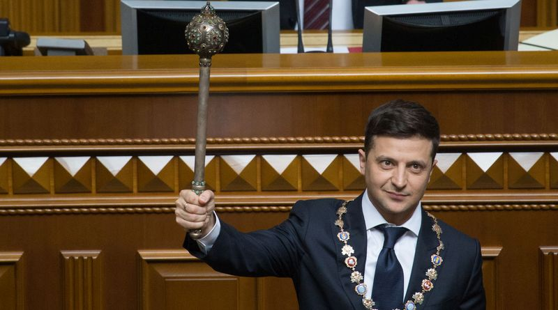

Volodymyr Oleksandrovych Zelensky born 25 January 1978 is a Ukrainian actor, comedian, television writer, screenwriter, television producer, film producer, film director, and politician serving since May 2019 as the 6th President of Ukraine. Prior to his political career, he obtained a degree in law and created a production company, Kvartal 95, which produces films, cartoons and TV comedy shows. Kvartal 95 created a television series called Servant of the People, in which Zelensky played the role of President of Ukraine. The series aired from 2015 to 2019. A namesake political party bearing the same name as the television show was created in March 2018 by employees of Kvartal 95. Zelensky announced his candidacy for the 2019 Ukrainian presidential election on the evening of 31 December 2018, upstaging the New Year's Eve address of President Petro Poroshenko on 1+1 TV Channel.Six months before Zelensky announced his candidacy, he was already one of the frontrunners in opinion polls for the election.Zelensky won the election with 73.22% of the vote in the second round, defeating incumbent Petro Poroshenko.
